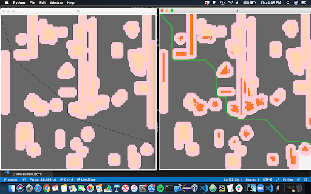
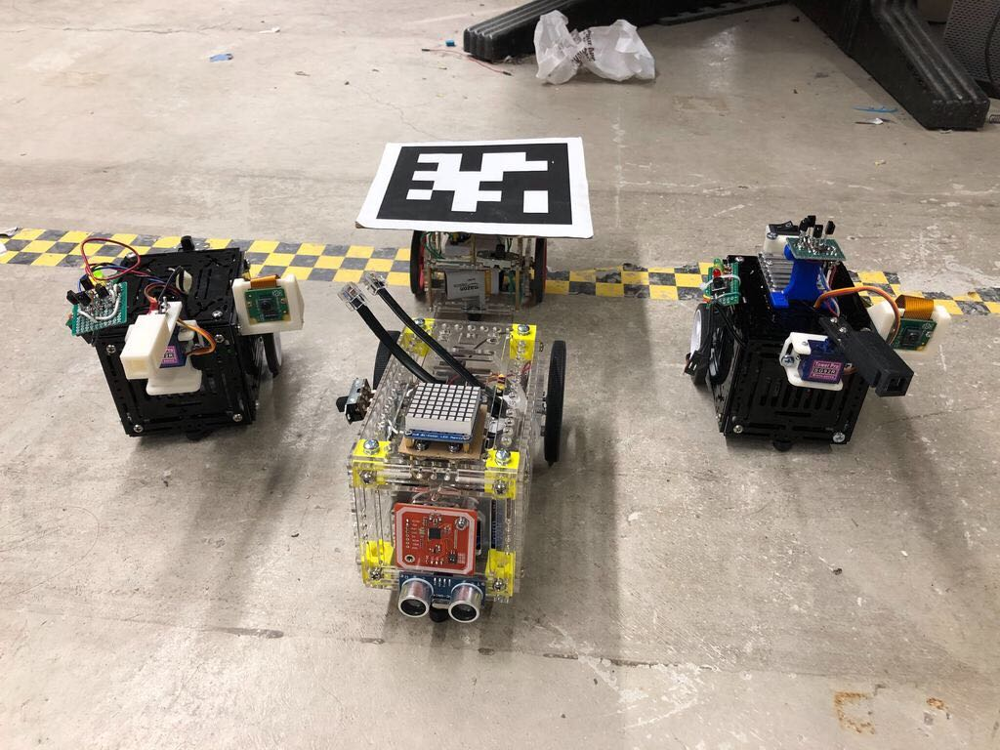
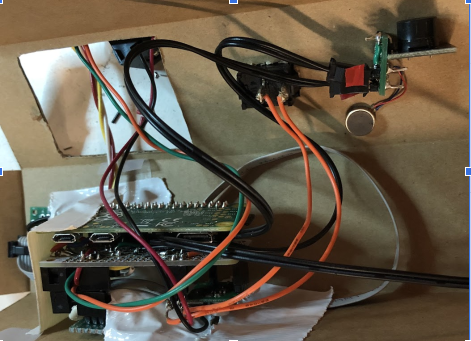
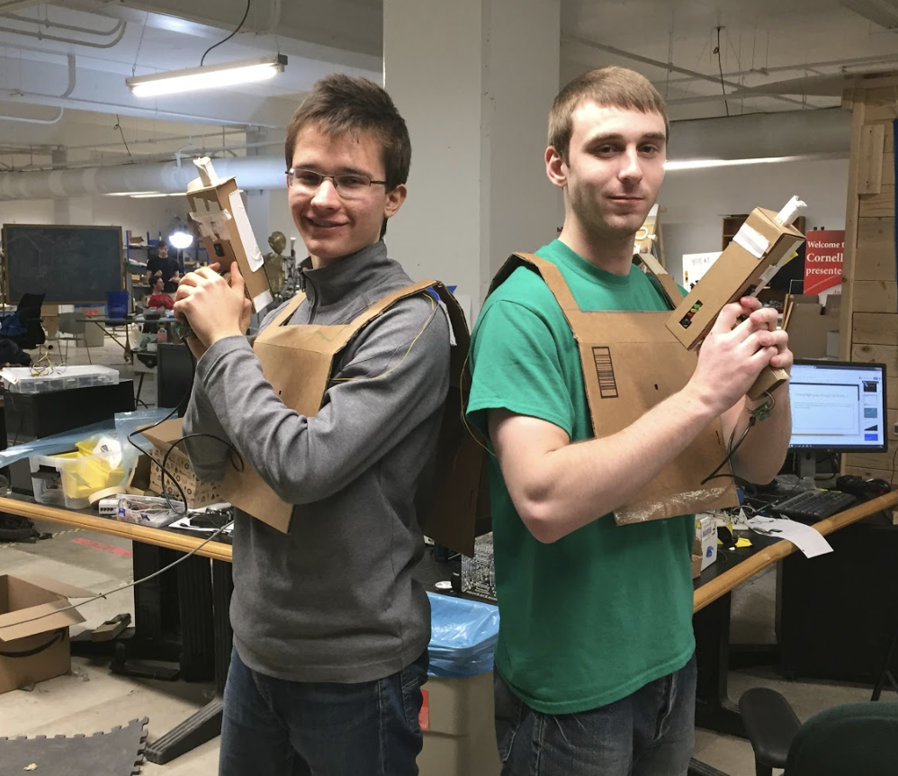
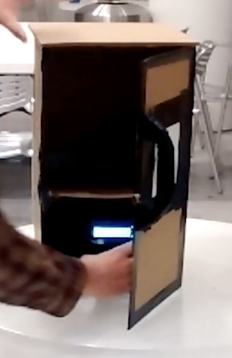
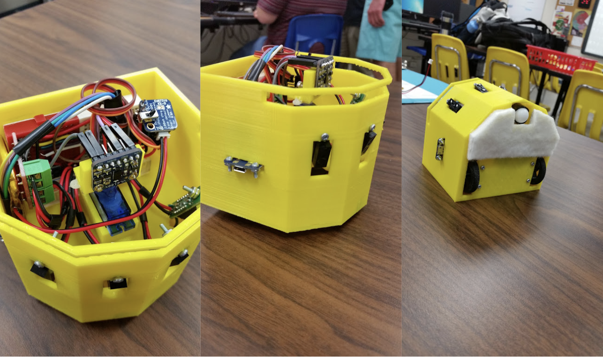

Zoltan Csaki

Software Engineer
Ithaca NY
(607)280-0335
Skills
Computer Programming: profficient in Python, Go and Typescript
Other Languages: familiar with C, Java, Ocaml, PHP, Javascript, HTML
Other Skills: Embedded Programming, Sensor Integration, Source Control, Code Review Process, Pytorch, GraphQL, SQL, Angular, React, Arduino, Raspberry Pi, Circuitry
Teamwork: Experienced with large software products and collaborating with teams
Problem Solving: Enjoys challenges and thinking outside the box
Enthusiasm: Brings energy, motivation and excitment to the work enviroment
Relevent Coursework
Currently Enrolled: Quantum Computing, Foundations of Robotics, Graduate Algorithms, Computer Networks & Telcommunication
Past Coursework: Algorithms, Machine Learning, Large Scale Machine Learning, Computer Vision, Reinforcement Learning, Functional Programming, Operating Systems and Practicum, Object Oriented Programming and Data Structures, Discrete Structures, Embedded Systems, Digital Logic and Computer Organization, Electromagnetic Fields and Waves, Signals and Information, Linear Algebra, Differential Equations, Multivariable Calculus, Intro Operations Research, Physics II: Electromagnetism, Physics I: mechanics and heat
Education
Cornell Universty College of Engineering Class of 2022, Computer Science Major, Electrical Computer Engineering Minor
2018 - Now
Lansing High School
2014 - 2018
Experience
![]() Thumbtack is an online service that matches customers with local professionals.
I was on the customer growth engineering team. I re-factored the frontend and
backend of the hero section of all the cost pages on the Thumbtack website to be
served by go micro service architechture instead of a PHP monolith backend.
This involved loading data about the past hiring cost of that category of professionals
based on the location of the user, and displaying the estimated price ranges of the profressionals.
This project required me to learn and use PHP, Go, React, GraphQL and Thrifter.
After this, I wrote the backend for the pro list on the Thumbtack app. This involved using
Thumbtack's recommendation system to select a category of professionals based on the user history,
then retrieve a list of pros from that category. After this all of the pro information had to be
retrieved and displayed in the carousel of recommended pros.
Thumbtack is an online service that matches customers with local professionals.
I was on the customer growth engineering team. I re-factored the frontend and
backend of the hero section of all the cost pages on the Thumbtack website to be
served by go micro service architechture instead of a PHP monolith backend.
This involved loading data about the past hiring cost of that category of professionals
based on the location of the user, and displaying the estimated price ranges of the profressionals.
This project required me to learn and use PHP, Go, React, GraphQL and Thrifter.
After this, I wrote the backend for the pro list on the Thumbtack app. This involved using
Thumbtack's recommendation system to select a category of professionals based on the user history,
then retrieve a list of pros from that category. After this all of the pro information had to be
retrieved and displayed in the carousel of recommended pros.
 I was hired to be a teaching assistant for Introduction to Machine Learning in
2021 and also was a consultant for introduction to CS with python in 2019-2020.
I run office hours, help students learn, grade work/exams and helped run labs.
I was hired to be a teaching assistant for Introduction to Machine Learning in
2021 and also was a consultant for introduction to CS with python in 2019-2020.
I run office hours, help students learn, grade work/exams and helped run labs.
Team lead of the Computer Science Sub-team at Cornell Cup Robotics. Responsible for coordinating 15 software engineers working on chatbot, path-planning and object detection. Implemented code review pipeline with pull requests, set goals and deadlines and lead collaboration with other sub-teams. On top of this I worked on the autonomous navigation sub-team and implemented simulations to plan autonomous paths with smoothing. Before this I was on the electrical and computer engineering team and helped develop robotics kits for kids. I helped create universal one plug connections using RJ-12 cables for robotics electronics.
 I worked on the dev team of Mezmeriz to build a site where users can interact with and analyze 3D point cloud renderings. After interning there the summer of 2020, I was invited back to work during my winter break in 2021. I wrote software in Typescript, Python, Angular, HTML and CSS. I customized HTTP data-loaders to load elements into the 3D rendering, and mocked that data to run locally with NodeJS. I worked with a team to create a feature allowing users to begin a comment thread by clicking on a point in the 3D rendering. I implemented a feature where users can translate, rotate and scale 3D renderings while also allowing them to undo their actions and save the transformation matrix to the database. Lastly, I added a timeline with a draggable knob that allows users to filter what points are visible by date, and added a split screen feature that displays the same region of space from two different scans.
I worked on the dev team of Mezmeriz to build a site where users can interact with and analyze 3D point cloud renderings. After interning there the summer of 2020, I was invited back to work during my winter break in 2021. I wrote software in Typescript, Python, Angular, HTML and CSS. I customized HTTP data-loaders to load elements into the 3D rendering, and mocked that data to run locally with NodeJS. I worked with a team to create a feature allowing users to begin a comment thread by clicking on a point in the 3D rendering. I implemented a feature where users can translate, rotate and scale 3D renderings while also allowing them to undo their actions and save the transformation matrix to the database. Lastly, I added a timeline with a draggable knob that allows users to filter what points are visible by date, and added a split screen feature that displays the same region of space from two different scans.

 Team lead Junior year managing a team of 15 people and head programmer both junior and senior year. Qualified for state competition in both 2017 and 2018. I was in charge of software programmed in java, and I also worked with sensor and mechanical design.
Team lead Junior year managing a team of 15 people and head programmer both junior and senior year. Qualified for state competition in both 2017 and 2018. I was in charge of software programmed in java, and I also worked with sensor and mechanical design.
 As an engineering Project Lead The Way graduate, senior year of high school we were given the freedom to pitch and design a product. My team worked with robotics and thought of Dustin, an autonomous miniature vacuum for desks, shelves and small areas.
As an engineering Project Lead The Way graduate, senior year of high school we were given the freedom to pitch and design a product. My team worked with robotics and thought of Dustin, an autonomous miniature vacuum for desks, shelves and small areas.
Project Portfolio
I worked on creating a list of available small businesses for the explore page on the Thumbtack app. Thumbtack is a service that matches customers and small businesses. When users open the app, the first thing that shows up is the explore page. Before, the explore page only recommended service categories such as "Home repair," "Personal Trainers," or "Photographers." When one of these categories is clicked on, the user is taken to a page that allows them to explore more about it and find pros from that category. My project was to add a new feature that recommends a specific category and then displays a list of pros directly for the user to hire. To tackle this project, I first came up with a design for the system that used ML-based recommendation systems to select a category for the user based on the information we have about them and their history. Then I had to call the pro service to retrieve professionals from the selected category and the user's ZIP code. Finally, I served all the data about the pros to the front-end engineers so they could display a carousel of pros. There is an A/B experiment being run right now to determine if users will click on the professionals and to see how success metrics respond to this new pro list. The hypothesis is that my new pro list will add versatility to the explore page and also make it more likely for customers to hire pros. This project was very exciting and impactful because it was one of the first products I built on my own that will be shipped and used by thousands of people every day.
Kionix Search
 I fixed the search of the Kionix website because documents were not coming up when relevant searches were made. I learned SQL and then worked through MySQL to update and organize thousands of entries in the Kionix database. The main goal was to have a customer be able to search any sensor and have all the relevant documents from the server show up in an organized fashion (For example if you search 'KX126'). I worked with a website development company to implement the changes in the search and add in filters that sorted documents.
I fixed the search of the Kionix website because documents were not coming up when relevant searches were made. I learned SQL and then worked through MySQL to update and organize thousands of entries in the Kionix database. The main goal was to have a customer be able to search any sensor and have all the relevant documents from the server show up in an organized fashion (For example if you search 'KX126'). I worked with a website development company to implement the changes in the search and add in filters that sorted documents.
Organization and Accessibility of Website Files
I worked in the database to link all the evaluation circuit boards to all the corresponding sensors and display multiple relevant boards at once. I also helped create a table that organized documentation and linked the documents to corresponding sensors.

HTML web page updates
I learned HTML and then updated or remade all the web pages under the Applications tab of the Kionix website.
I worked on writing software for a demo that Kionix now takes to many sensor expos to promote their sensors. We put a sensor on slot cars and took the data from the Kionix accelerometer (measures acceleration) and magnetometer (measure magnetic flux). Then we then processed the data and displayed it on a user interface in order to create many real world applications of the Kionix sensors to show how functional and versatile they are. Some algorithms I worked on include but are not limited to the terrain detection algorithm and driver profiling.
Terrain Detection: The idea was to have the car drive over some sort of 'rough' terrain to show the Kionix sensor can be used for vibration analysis in the high frequency domain. I used paper clips to emulate rough terrain. At first, I thought this analysis would be simple, but because the sensor is so sensitive to changes in acceleration It was very difficult to see distinct changes in the acceleration patterns that could be hard coded without giving false positives. So I came up with an algorithm that fed in the most recent .5 seconds of data, and then calculated the average acceleration. After this the algorithm calculated how many distinct positive and negative peaks there were in all three axis of acceleration. I compared the data of how many peaks there were in the three axis when just driving the car around and while driving it over paper clips to then determinree thresholds for number of peaks there should be to consider the terrain 'rough'. After refinement the algorithm had a close to 100% accuracy rate.
Driver Profile: The idea of this algoritm is to rate a driver based on how 'good' or safe the driver of the slot car is. We did this by taking in to account the cars peak accelerations, max g forces and average speed throughout a lap in order to assign the driver a profile score from 1 to 100 based on how good of a driver they were. This could be used by insurance companies to help lower the rate for safe drivers or trucking/transportation companies to ensure their employees are driving safely.
The goal of this project is to give a verbal command to an R2D2 replica robot and have it autonomously navigate there while avoiding objects. Due to COVID-19 our team had to transition to working online and we created simulations to test our grid representation and algorithm.
Grid Representation: We first created custom classes to represent a grid with tiles. The overarching idea is to represent the robot as a single point, and then "bloat" all objects in the enviroment by treating all the tiles more than 1 robot radius away from the object as object tiles.
Simulation: I created a simulation to help display and test the A* algorithm The simulation generates a random enviroment and then as the robot plans new paths the enviroment is filled in through pseudo sensor data. This sensor data is fed in to the simulation based on where the robot is, and the objects generated around that coordinate. We also wrote code to smooth the paths of the robot to make them look more intelligent using the "line of sight" method Code: To View our code visit the github page

Liason: I worked as the liason between the CS team and ECE team to help integrate LIDAR sensors, infrared sensors, ecoders and indoor ultrasonic GPS systems.
With a group of three, I helped create the full game of settlers of Catan in terminal. The game can be played through terminal and interfaced with both clicking and entering text. All our code was written with the functional programming language OCaml.
Code: To View our code visit the github page
Took the operating systems project based course where we working on developing an operating system in C throughout the semester. I implemented a queue, multithreading with a multi level feedback queue, a disk cache and a FAT file system.
For my machine learning final project we got data for the 2016 election, and based on a few county demographics such as median income, bachelor rate, death rate, etc... we had to predict how a counties not in the training set would vote. I implemented a graph convolutional neural network using pytorch to predict how counties would vote and utilized counties and their neighboring counties demographics to predict county election results.
Autonomous Program
I wrote an autonomous program that won an award at Robotics tournament. The goal was to knock your opponents colored ball off, read and decipher a picture mounted on the wall using computer vision and then place a block in the slot that corresponds to the image you recognized. I was able to do all of this and received an award for my use of Gyroscopic and encoder sensor data to orient and guide the robot to place a block in the correct slot. I developed an algorithm that used the law of cosines to correct for error in how the robot drove off of the wobbly platform it started on, and general error in the ending location of the robot (because it did not drive perfectly straight). The high scoring potential of my program helped my team and our alliance win the entire tournament.
^My teams robot is 7743 we start at the bottom right^
I also played a strong leadership role on the team and worked with others to create a claw that picked up a humanoid object and 'rescued' it by lifting it up and extending it over the wall

I was elected president of my robotics team this year of high school. My job was to run the team, manage meetings, assign people tasks and ensure that work got done. Our robotics team had the bests results and highest amount of participation in its history that year. We made it to the state tournament.
On top of being president and overseeing the design and construction of the robot, I also took on much of the programming of the robot, working with someone else to write the autonomous and driver controlled programs in Java.

The goal was to have independent user controlled bots that can play laser tag against each other. The game worked such that the user controls the bots using a 'video game' made with unity, which controls the bots both in the game and in real life. The video game also gets feedback from the overhead cameras to determine the bots position in the virtual game.

I worked on the electrical engineering and sensor side of the game helping to integrate the laser tag part of the game. I worked to design and create the circuitry for minibots that could shoot infrared beams and get shot, while also keeping track of their lives with LEDs then video tape and stream the experience for the user and rotate the laser gun with a servo.
I later worked to help expand the robotics kit to include "plug and play" functionality with RJ-12 cables and our custom PCB. I was personally responsible for adding the reflectance sensors and implementing the open source line following algorithm from scratch for the kit.
Me and a teammate developed a game of laser tag from scratch. We worked to explore the teams minibot platform (explained in previous tab) and expand on it by integrating infrared sensors/emitters sound mechanisms and creating a project that would be a fun, educational and do-able for young adults. 
I worked to design the circuitry using raspberry pi and soldered together proto-boards with raspberry pi's to create a fully functioning laser tag system, including a trigger, infrared emitter, an array of detectors on the gun and in the vest, audio feedback, a reset button and LED lights indicating how many lives the player has.
I also helped create the software behind the game. I wrote code that interacted with the hardware at a low level getting voltage inputs from sensory information and outputting specific frequencies and voltages to make the system run. We did this using object oriented code that used multi-threading in order to run the many different functions of the game at one time. 
 My team worked on a household security device to monitor certain areas of your house with a very simple, compact and low cost device. We built an Arduino project that used motion sensing data from a sensor to send instant text alerts to your phone when activity is detected. The device also had the option of a blaring alarm to scare away small children. This idea was pitched as a child safety tool for medicine cabinets and gun cabinets but has a wide array of possible usages ranging from ensuring no one steals your money or the kids aren't taking chocolate and cookies too often.
My team created and pitched a custom paint mixing machine within 24 hours. Our idea was to have a graphic user interface you can use on your computer to select any color on the rainbow spectrum. Then based on the user input the program calculates the amount of Red, Green and Blue paint to mix in order to create the desired shade of paint.
In my senior year high school engineering class we came up with the product idea called 'Dustin', which would be a small scale autonomous robot that could navigate and shelves, desks or any surface without falling off and bumping into objects, while also vacuuming/ cleaning the area. 
Our project resulted in a final concept prototype. We worked extensively with sensory information such as LIDAR, infrared, accelerometers and gyroscopes to ensure the bot would not run in to objects or drive off shelves/tables. We also worked with product design to create a maneuverable autonomous dust wiping bot.
During senior year in my engineering class, me and two others decided to work on a self-driving car project, and our goal was to build a car that could autonomously navigate the school.
We managed to build a robot using Arduino's platform, motors, motor controllers, an ultrasonic sensor and infrared sensors. The program told the robot to navigate randomly unless it sensed surroundings. It had infrared sensors at the bottom to ensure it did not drive off stairs, but backed up and turned around. It also had a scanning ultrasonic sensor that scanned to check how far away the walls were around the robot so it could decide which way to drive.